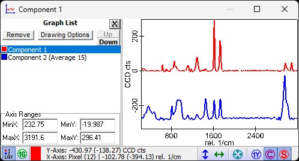
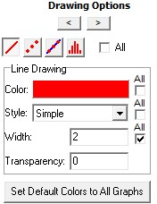

图谱查看器列表
点击状态栏中的"列表"按钮，在图谱查看器左侧显示图谱列表：

图谱列表显示图谱查看器显示的所有图谱对象。
这里可以执行以下操作：
您可以点击任意图谱使其成为选定的图谱（例如用于标尺或更改绘图选项，或在没有列表的情况下使用快捷键 Page-Up / Page-Down 在查看器中切换）。
您可以通过在图谱列表中按 Delete 键或按上方的"移除"按钮从查看器中删除图谱（不是从项目中删除）。
您可以更改所有图谱的显示X轴范围或选定图谱的Y轴范围。
双击将显示选定图谱对象的绘图选项。
在这里您可以更改线条样式（例如线条、点、线条+点、直方图、线宽等）：
